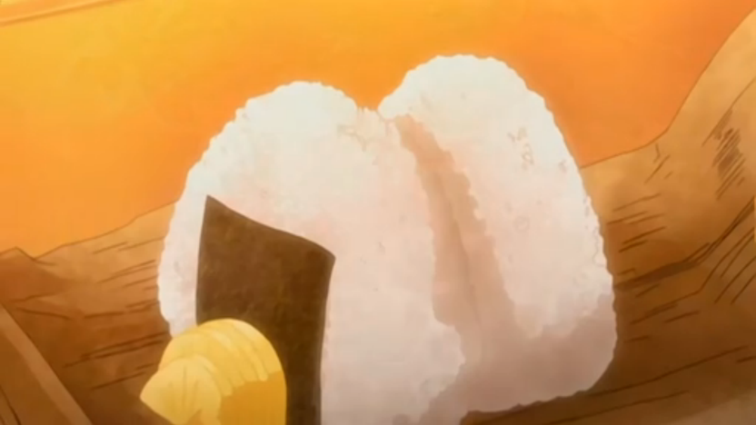

Onigiri

Description
Another Japanese comfort food, Onigiri is popular and versatile. Onigiri is a Japanese rice ball formed into triangles
and sometimes wrapped in nori. Onigiri can be made with various fillings such as sha-ke (salted salmon),
umeboshi (Japanese pickled plum) or okaka (bonito flakes moistened with soy sauce).
These rice balls are portable and easy to eat, making them an ideal snack!
Ingredients
- 3 cups sushi rice cooked
- 50g furikake (rice seasoning)
- water
- salt
- nori sheets cut into small rectangles
Steps
- Add cooked sushi rice, furikake into a large mixing bowl and mix evenly.
- Separate rice into equal portions, approximately one large handful each.
- Wet your hands with water and rub together with a pinch of salt.
- Using mainly your fingertips while the ball rests in your palm, press and squeeze the rice into a triangular shape.
- Place a slice of nori on the bottom of the onigiri, rough side in towards the rice. Fold it upwards to the middle of the onigiri.
- Repeat for remaining rice portions.